01产品定位与使用场景
批图王解决的不是「做一张好看的图」，而是「同样的版式，换素材换文案，出 500 张且每张都不一样」。 它的全部设计取舍都围绕这个目标：模板复用、规则前置、批量可控。
谁在用
第一优先用户是电商运营与批量制图人员。他们的典型动作是：在素材文件夹、文案表、模板文件和导出目录之间反复切换， 长时间重复「换图 → 换字 → 检查 → 导出」。批图王把这条链路上的四个环节收进同一个工作台， 避免在设计软件、表格脚本和批处理工具之间来回倒。
三个真实场景
一套 1280×720 主图模板，产品图 40 张、卖点文案 30 条。要求产品图和文案按品类配对，且同一张产品图不重复出现。→ 用「绑定组 + 单次用图」。
同一个活动要方形图、竖版图、横版图三套尺寸。三个标签页各改一套，导出时一次跑完，按标签分目录落盘。
把调好的模板存成项目预设，带封面缩略图和分类标签。下次直接「打开并批量导出」，不用重建图层。
本文所有界面截图（共 14 张）由 --screenshot 参数从当前代码真实渲染生成，不是示意图；
所有参数名、取值范围、默认值均取自源码，标注了对应文件。
02整体架构
单一入口 main.py 负责应用级基础设施，然后把窗口交给 QML 工作台。
QML 只做界面，所有业务状态通过 Python 侧的 ViewModel 暴露——界面重构不能碰数据格式。
图 2-1 分层架构与数据流
启动链路
main.py 在导入阶段先做三件事，顺序不能动：重定向输出流（避免控制台编码问题拖垮后续 import）、
分流 --export-worker（批量导出独立进程）、分流 --apply-update（自升级替换进程）。
之后才进 main()：建日志 → 崩溃会话 → 依赖检查 → 建 QApplication → 启动画面 →
交给 app/qml/qml_main.py 加载 Main.qml。
「经典 Qt Widgets 主界面」已于 2026-10-28 下线，但 setup_fixed_theme() 这套 QSS 保留着——
QML 里嵌的 QWidget 弹窗（颜色选择器、新建画布）靠它上色，删掉标题栏会变纯白。这类「名字带历史包袱但不能删」
的地方在 AGENTS.md 里都留了说明。
架构约束
tools/check_architecture.py 守着四件事：models/utils/services/engines/workers 不得反向 import qml/ui；禁止裸 except:；禁止未使用 import；禁止模块顶层重复定义。它是纯标准库实现，离线可跑。
03功能地图
程序能力可以切成九块。前四块是「造模板」，中间三块是「配规则」，最后两块是「出图」与「交付」。
| 模块 | 解决什么 | 主要入口 | 关键实现 |
|---|---|---|---|
| 文档与画布 | 一屏多稿、尺寸与分区对齐 | 顶栏「画布」· Ctrl+N · 画布右键 | Document / WorkspaceSessionViewModel |
| 图层体系 | 图片、文字、异形、分组四类结构 | 命令栏「新建图层」· 图层列表右键 | Layer / TextLayer / ShapedLayer / LayerGroup |
| 属性与效果 | 变换、混合、描边、圆角、叠加、文字排版 | 右侧检查器（基本参数 / 更多参数） | WorkspaceViewModel 212 个属性 |
| 素材源与随机 | 文件夹取图、按行取文案、随机变换 | 检查器「图像源」「随机变换」「图层分身」 | layer_image_source_mixin / document_randomize |
| 绑定组 | 多图层成套出现，同批次不串类、不重样 | 命令栏「图层绑定管理」 | BindingGroup（4 个 mixin） |
| 尺寸匹配 | 镂空源图层的位置尺寸驱动目标图层 | 命令栏「图层尺寸匹配」 | LayerSizeMatchManager |
| 预设体系 | 模板资产化、可检索可复用 | 顶栏「预设」· Ctrl+Shift+P | PresetManager + 缩略图服务 |
| 导出体系 | 单图、单文档批量、多标签批量 | Ctrl+Shift+X / F12 / Ctrl+Alt+Shift+X | BatchExportViewModel / DocumentExportBatch |
| 更新与打包 | 静默检查更新、双形态发布 | 命令栏「检查更新」· build.py | updater.py（ed25519 签名校验） |
04文档与画布
启动后第一屏不是一张白纸，而是预设工作台。用户是奔着「用现有模板出图」来的，
只有明确要求新建（--blank）、打开文件或演示时，才直接进编辑器。
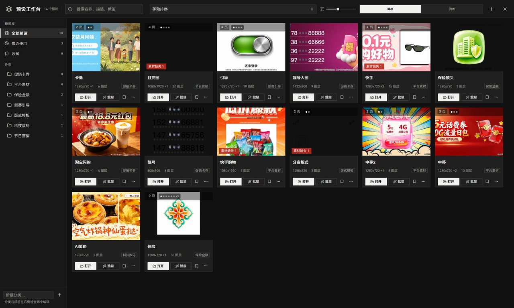
多标签文档
每个标签页是一份独立的 Document，有独立的画布尺寸、图层栈和撤销历史。
标签上出现琥珀色圆点表示「有未保存修改」；右键标签可以复制、左右移动、关闭其他、恢复导出面板。
关闭前会走统一的未保存确认，避免手滑丢稿。
新建画布
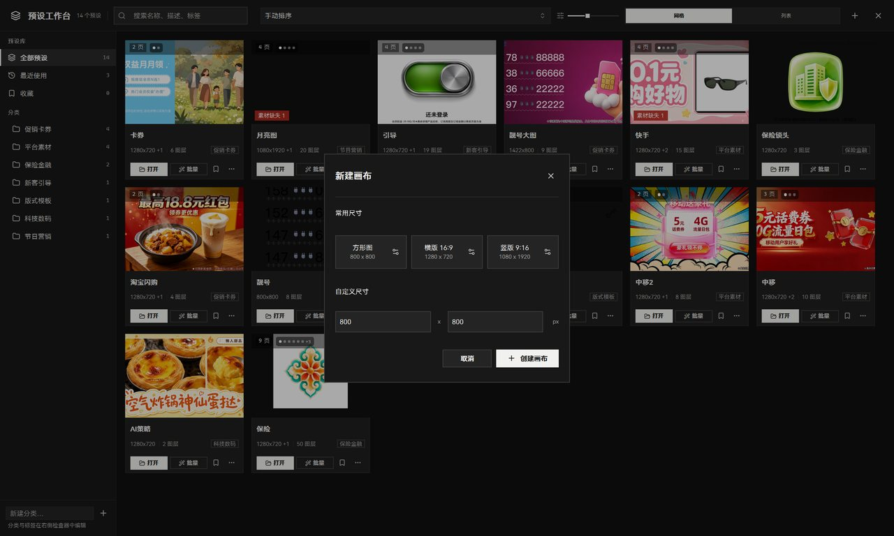
画布预设
内置 10 档标准尺寸，按「标准 / 高清 / 超高清 / 竖屏 / 正方形」分组：
640×480、800×600、1024×768、1280×720、1920×1080、2560×1440、3840×2160、720×1280、1080×1920、1000×1000、2000×2000。
用户新增的预设存在 ~/.config/批图王/canvas_presets.json，可改名、改尺寸、删除。
画布尺寸可以随时改（Alt+Ctrl+C），三种处理策略：比例缩放（内容跟着缩放）、 居中保留、左上保留——选错策略会让整版元素飞出画面，这是改尺寸时最容易出的事故。
标尺、参考线与吸附
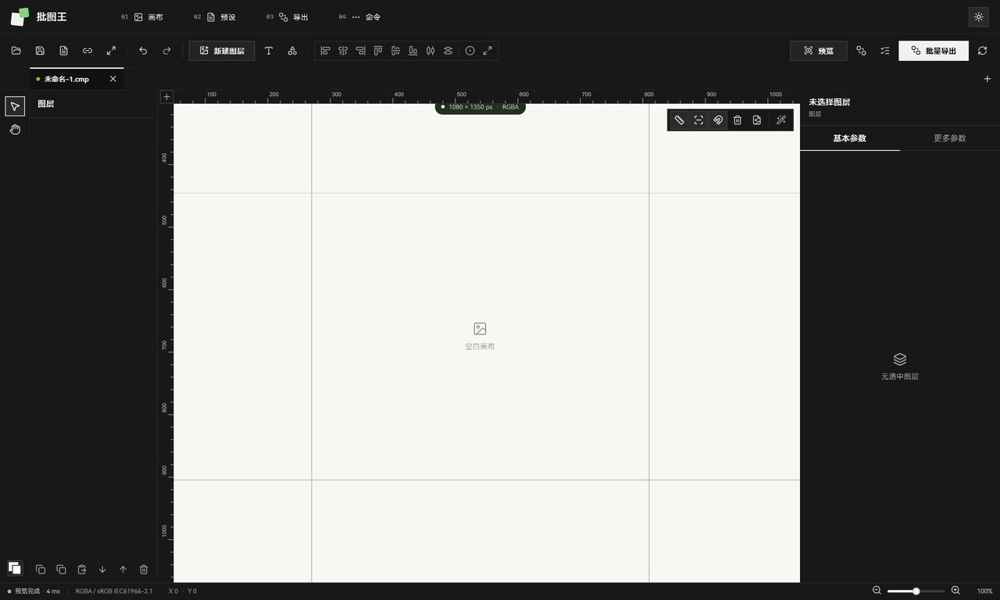
05图层体系
四类结构共用一套变换与效果基座，但各自的「内容来源」完全不同：图片图层取文件，文字图层取文案行， 异形图层取裁剪形状，图层组不参与渲染只做组织。
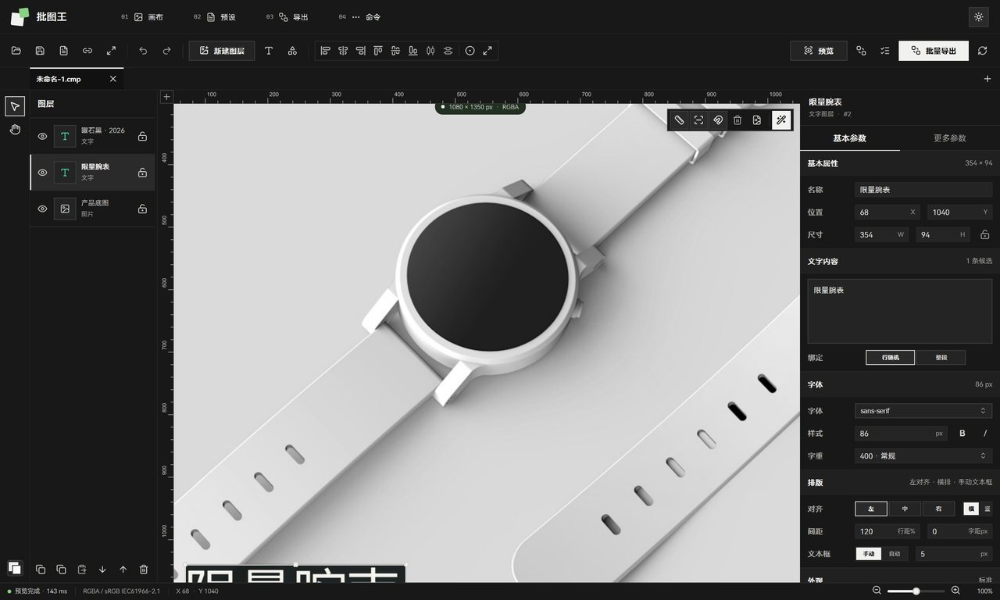
| 类型 | 内容来源 | 特有配置 | 批量时的行为 |
|---|---|---|---|
| 图片图层 | 单张图片，或整个素材文件夹 | 适配模式（填满裁剪 / 完整显示 / 原始尺寸）、裁剪方向、自由裁剪、去透明边 | 文件夹图层每张随机取图；可被「单次用图」约束为一次性消耗 |
| 文字图层 | 一段文案，或按行拆分的文案库 | 字体/字重/字距/行距、按行绑定、局部颜色与字号区间、描边、背景、阴影、发光、渐变填充 | 按行随机抽一行；绑定模式下只抽命中分类关键词的行 |
| 异形图层 | 一张图片 + 一个裁剪形状 | 矩形 / 直角梯形 / 圆形 / 正五边形 / 正六边形，多边形可转角度与圆角 | 同图片图层，额外套形状蒙版 |
| 图层组 | 不渲染，仅组织 | 展开/折叠、组内显示与锁定联动 | 不参与组合计算，但影响可见性判定 |
通用操作
- 变换：位置、尺寸、旋转、水平/垂直翻转、等比锁定；Ctrl+T 进自由变换。
- 排列：六个对齐（左/水平居中/右/顶/垂直居中/底）+ 两个等距分布（需 ≥3 个图层）+ 完全居中 + 匹配画板大小。
- 层级：上移/下移一层、置顶/置底，Ctrl+] / Ctrl+[ 与 Ctrl+Shift+] / Ctrl+Shift+[。
- 编组：Ctrl+G 编组、Ctrl+Shift+G 取消；组内图层按相邻关系收纳。
- 样式复用：Ctrl+Shift+C 复制图层样式、Ctrl+Shift+V 粘贴——批量调参时比逐个改快得多。
- 复制：Ctrl+J 复制选中图层到新图层，Ctrl+C / Ctrl+V 跨文档粘贴。
异形图层的形状从哪来
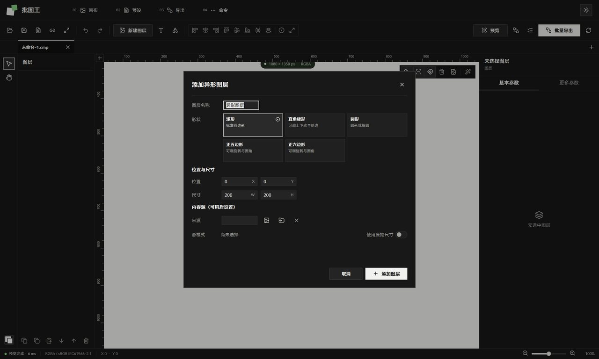
形状之外还有一层矢量路径：开启路径编辑后，矩形/多边形可以被拆成顶点与贝塞尔控制点，
逐点拖动，控制点连接方式支持镜像、共线、自由三种。这层几何由 vector_layer_geometry.py 计算，
描边则走 vector_stroke_sdf.py 的 SDF 采样，所以细描边在放大时不会糊。
06属性检查器与图层效果
检查器是「改参数」的唯一入口，分两页：基本参数放高频项（名称、位置、尺寸、内容）； 更多参数放变换、随机、分身、混合与各类效果。所有区块按选中图层类型动态显隐，不会出现无关字段。
图片图层：基本参数
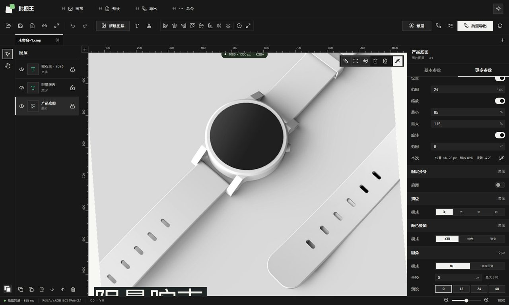
文字图层：排版与外观
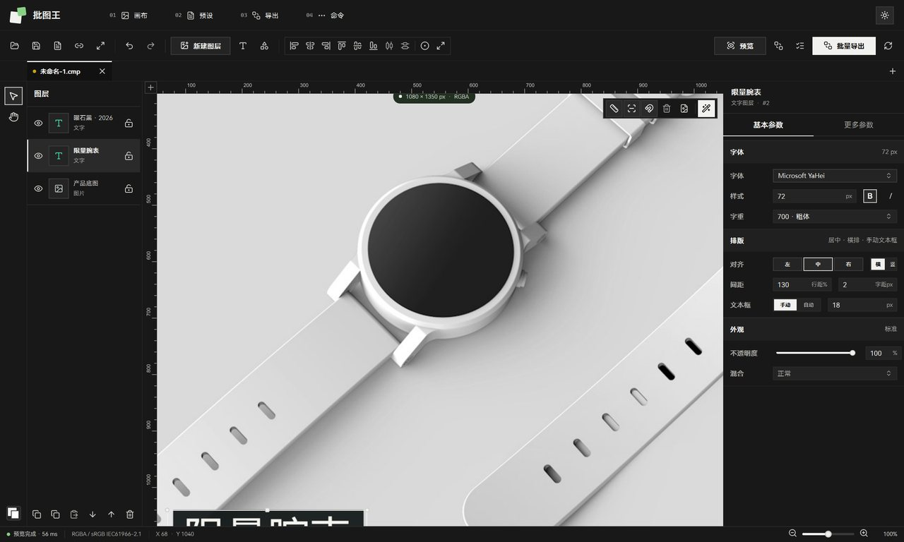
文字能力比一般批量工具厚：支持按行绑定（一行一条文案，随机抽一行）、
局部颜色与字号区间（同一段落里不同字符不同色/不同号）、竖排、
渐变填充（线性/径向/角度）、背景块、投影、发光。这些效果在 text_layer_render.py 里按「先算内容蒙版 → 再套效果 → 最后合成」的顺序出图，
和导出用的是同一套代码。
图层分身：一次排版，阵列成 N 份
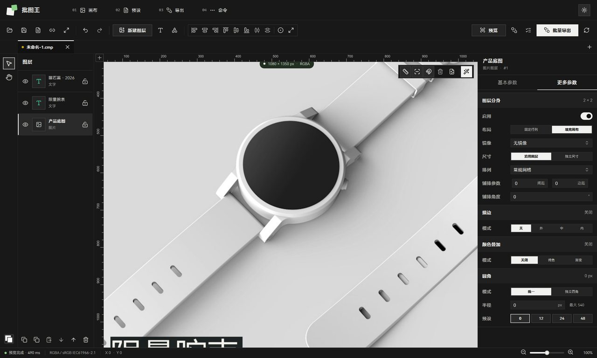
可用的图层效果一览
| 效果 | 参数 | 说明 |
|---|---|---|
| 混合模式 | 16 种 | 正常、正片叠底、滤色、叠加、柔光、强光、颜色减淡/加深、变暗/变亮、差值、排除、色相、饱和度、颜色、明度 |
| 描边 | 宽度、颜色、类型、拐角、端点、虚线长/间隙 | 类型分内/居中/外；拐角分斜接/圆角/斜切；端点分平头/圆头/方头 |
| 圆角 | 统一半径，或四角独立 | 上限随图层尺寸变化（界面会显示「最大 540」这类实际上限） |
| 颜色叠加 | 颜色 + 不透明度 | 给图层整体染色，常用于批量改主色 |
| 渐变叠加 | 起止色 + 角度 + 不透明度 | 线性渐变，角度以度为单位 |
| 随机变换 | 位置偏移、缩放区间、旋转区间 | 每次出图重新抽样，让同一模板的成品不雷同 |
| 图层分身 | 行列数、间距、镜像、自定义尺寸、填充画布 | 一个图层阵列成 N 份；填充画布支持常规网格 / 错位排列 / 边框排列，可整体旋转 |
关于 Ctrl+E「向下合并」
当前实现等价于「把上下两个图层编组为合并容器」，没有做像素级扁平化。源码注释写得很明确（workspace_vm_layer_ops.py），状态栏也会提示「已编组为合并容器」。需要真合并时，导出成图后再导入。
07素材源与随机化
这一层是「批量」的发动机。规则很简单：图层指向一个候选池，每次出图从池里抽一个。 复杂的是怎么保证抽得不重复、不串类、符合业务约束——这部分规则在绑定组里。
三种候选池
指向一个文件。批量时不变，适合 logo、固定底板。
指向目录，扫描全部受支持图片（png/jpg/jpeg/gif/bmp/tif/tiff/webp）。每次抽一张。
文字图层按行拆分，一行一条。可切换「按行随机」与「整段排版」两种模式。
随机化怎么执行
预览里的「随机一批」和批量导出走的是两条入口，但规则一致。Document.randomize_all_layers() 的实际顺序是：
- 筛出有效可见图层（图层组不算，父组隐藏的子层也不算）。
- 若绑定管理器启用：先跑
analyze_and_restrict_layer_files()，把每个图层的可用文件限制在绑定组公共分类内；再randomize_bound_layers()一次性为所有绑定组选定成套组合。 - 未被绑定覆盖的图层各自随机：文字抽行，图片抽图；非绑定图层会遵守文件限制，不会抢占绑定图层已占用的素材。
- 最后为所有可见图层重新生成随机变换参数（位置/缩放/旋转）。
随机之后不粗暴清全部缓存，只打 _needs_cache_refresh 标记——图层 surface 缓存的 key 里带了图片路径和变换参数，
换图的自动失效、没换的直接命中，避免每次随机都全量重解码导致几秒卡顿。同时置 _quick_first_frame，
先出低质量快图再后台补全质量，点一下立刻有反馈。
绑定链路一旦抛异常，会回退到基础随机化并打印警告，而不是静默出图。宁可让用户看到「绑定未生效」的提示，也不要让他拿到 500 张串类图才发现问题。
08绑定组（核心能力）
绑定组解决的问题：一张主图里，产品图、卖点文案、促销标签必须「成套」。产品是蓝牙音箱，配的文案就得是音箱的； 不能出现音箱图配抽纸文案。绑定组把这些图层绑成一个决策单元，每张图只抽一套。
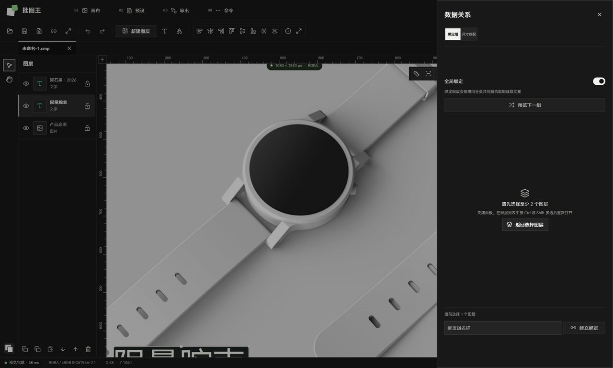
决策流程
图 8-2 绑定组选材决策链
分类是怎么被识别出来的
没有让用户手工打标，而是从既有命名里推断，两条线索：
- 文件夹 / 文件名：
product_category_extractor.py维护一份中文+英文关键词表（蓝牙音箱、抽纸、服装、食品、美妆、家居、数码、运动、母婴、汽车）， 外加品牌映射（心相印/维达 → 抽纸，索尼/JBL/Bose → 蓝牙音箱，小米/华为/苹果 → 数码）。命中即归类。 - 文案内容：文字图层的每一行也过同一套词典，提取品类标签。所以「买音箱送支架」这类文案会被识别成音箱类。
分类索引会持久化到 ~/.config/批图王/cache/binding_folder_category_index_v1.json，
按目录 mtime 判断是否需要重扫——素材文件夹几万张图时，这个缓存直接把每次开面板的几十秒降到几乎无感。
三个容易混淆的开关
| 开关 | 位置 | 真实语义 |
|---|---|---|
| 全局绑定 | 数据关系 · 绑定组 | 总闸。关掉后所有图层各自独立随机，绑定组配置保留但不起作用 |
| 避免重复 | 批量导出 · 组合策略「智能采样」 | 启用跨图片的组合避重；开启且组合空间足够时走确定性枚举，保证「不重复也不漏图」 |
| 单次用图 | 批量导出 · 组合策略「单次用图」 | 指定图层里的每个文件在整批中只用一次；素材耗尽时跳过该次生成，而不是回头重复用 |
09尺寸匹配与自动遮罩
绑定组管「内容配对」，尺寸匹配管「位置对齐」。典型用法：模板上有个白色镂空框（源图层）， 产品图（目标图层）要自动填进这个框、尺寸角度都跟着框走。
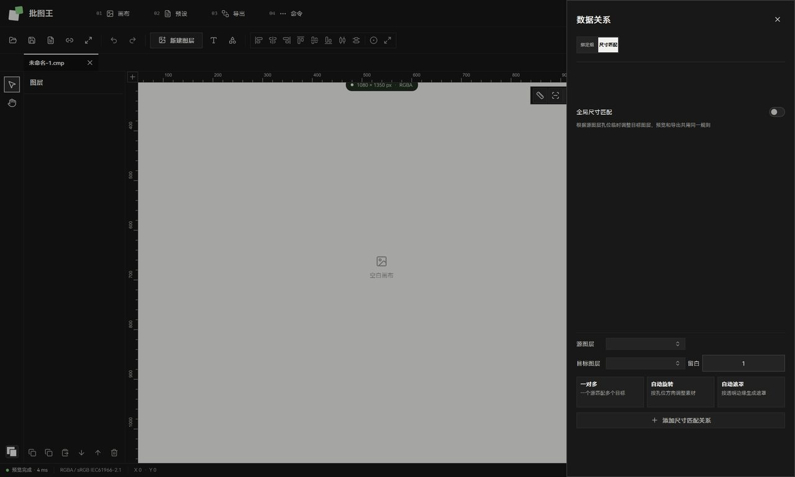
关系参数
| 参数 | 默认 | 作用 |
|---|---|---|
padding 内缩 | 1 px | 目标图层相对镂空区域的内缩量，避免压到边框 |
one_to_many 一对多 | 关 | 一个源区域驱动多个目标图层 |
auto_rotate 自动旋转 | 关 | 小于 4° 的倾斜视为不倾斜，减少误判抖动 |
auto_mask 自动遮罩 | 关 | 按阈值在源图上检测内孔并生成遮罩；面积比限定 0.2%–75%，可保留边框、边缘细化 |
自动遮罩默认关闭是刻意的：旧模板加载后如果突然开始自动抠孔，等于把历史成品的观感改掉了。
所以 AUTO_MASK_DEFAULTS 里 auto_mask_enabled=False，需要时手动开。
10预设体系
预设是「模板资产化」的载体：把调好的多标签文档存起来，带封面缩略图、分类、标签、收藏，下次一键召回。 首页就是预设工作台，说明这是程序的主入口而非附属功能。
预设能做什么
「保存当前」存当前标签，「保存全部」存整个会话。加载时按原有标签结构还原，不是压成一张图。
分类树、标签、收藏、搜索（名称/描述/标签）、四种排序：手动、最近使用、最近创建、名称 A→Z。手动排序下可拖拽重排。
封面可以指定用第几页；缩略图由后台线程池异步渲染，不阻塞界面，渲染完成后逐个回填卡片。
单个预设或全部预设导出成 .preset 文件，用于跨机器、跨人交接模板。
卡片上的三个动作
每张卡片常驻「打开」和「更多」，更多里是复制预设、导出预设、删除预设。 卡片右上角还会直接标出素材缺失（如「素材缺失 1」），打开前就知道这个模板能不能用—— 这是最实用的一个提示，省掉「打开 → 发现图全丢了 → 逐个找」的来回。
存储位置
预设数据在 %APPDATA%\批图王\presets\，索引文件是 presets_index.json，
缩略图单独缓存。首次启动会把仓库自带的初始预设复制到用户目录，之后只读用户目录。
11导出体系
三条通道，复杂度递增：单图导出最简，单文档批量最常用，多标签批量用于一次交付多尺寸。 三条通道共用同一套渲染器与编码策略，所以预览看到什么，导出就是什么。
图 11-1 三条导出通道的差异
批量导出面板
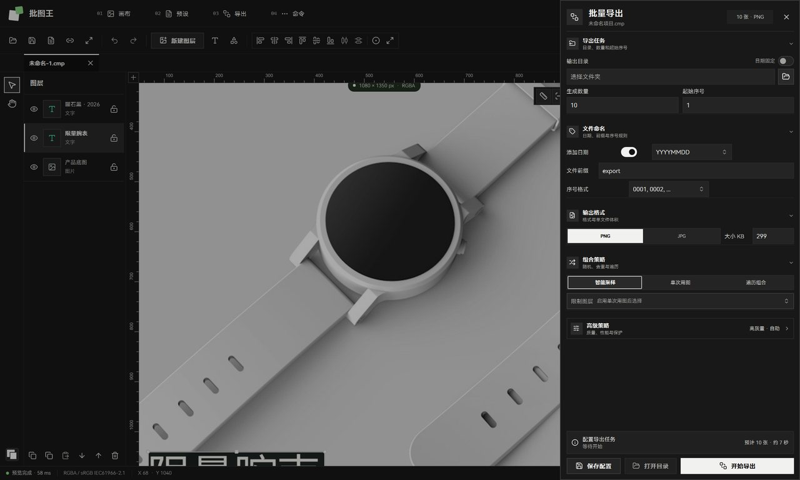
导出任务
- 输出目录：可选「日期自动创建」——勾选后按当天日期建子目录，历史批次不混在一起。
- 生成数量：默认 10。遍历组合模式下这个输入被组合数接管。
- 起始序号：默认 1，续跑历史批次时改成上次的末尾值即可。
文件命名
命名由「添加日期 + 文件前缀 + 序号格式」三部分组成，可组合。日期三档：YYYYMMDD / YYYY-MM-DD / YYMMDD；
序号四档：0001 / 001 / 01 / 1。
实际落到模板层还支持更多占位符：
| 占位符 | 含义 |
|---|---|
{number} / {number:04d} | 当前序号，带格式化补零 |
{index} / {count} | 序号别名 / 本次总数 |
{layer} / {layers} | 主图层素材名 / 多个素材名拼接（最多 3 个） |
{layer:0} / {layer:1} | 按索引取指定图层的素材名 |
{combo} / {combination_hash} | 本组素材组合的短哈希，用于去重核对 |
{image_name} / {layer_name} | 图片名 / 图层名 |
{binding_info} | 绑定分类信息 |
生成的文件名会再过一遍清洗：Unicode 归一化、替换 Windows 非法字符、去控制字符、合并重复分隔符、 按字节截断到 200 以内。中文不会被吃掉。
输出格式
批量面板当前暴露 PNG 与 JPG 两档，另有一个「大小 KB」上限输入框（0 = 不限制）。 填了上限且格式是 JPG 时，编码器会找「能塞进限制的最高 4:4:4 质量」再一次性写出，而不是反复重压。
组合策略（三选）
跨图片均衡组合，降低重复。开得越多，越倾向于选「没用过」的素材与分类。
指定图层在每个文件上只用一次。素材耗尽时跳过该次，保证绝不重复用图。
按组合顺序穷举，数量自动等于理论组合数。超过 1000 / 10000 会给出数量提醒。
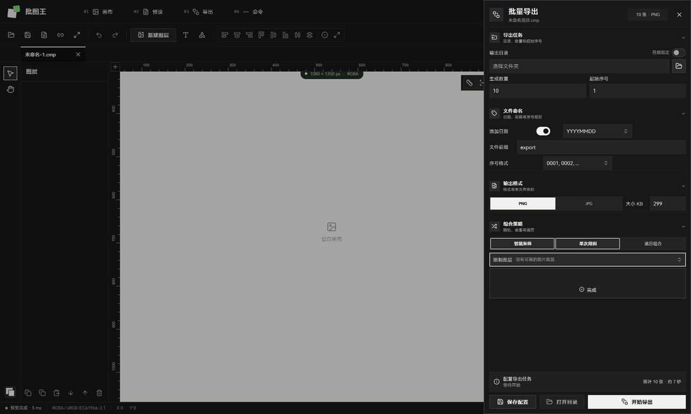
高级策略
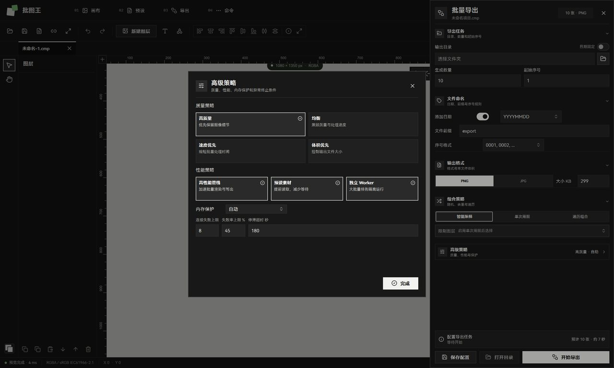
| 质量档 | JPEG 质量 | PNG 压缩级 | 取舍 |
|---|---|---|---|
| 高质量（默认） | 96 | 6 | LANCZOS 重采样，优先保细节，文件偏大 |
| 均衡 | 94 | 4 | 画质几乎无损，速度与体积折中 |
| 速度优先 | 90 | 1 | BICUBIC 重采样 + 低压缩，赶时间时用 |
| 体积优先 | 92 | 9 | 最大压缩；仅此档允许 PNG 有损量化 |
独立导出进程
数量达到阈值时，批量导出会自动切换到独立进程执行，主界面保持响应：默认 count ≥ 200
或「≥200 且可见图层 ≥8」触发。子进程通过快照文件接收文档，用 manifest 文件回传进度，
取消靠一个标记文件。环境变量 BTPW_FORCE_EXPORT_WORKER / BTPW_DISABLE_EXPORT_WORKER 可强制开或强制关。
多标签批量导出
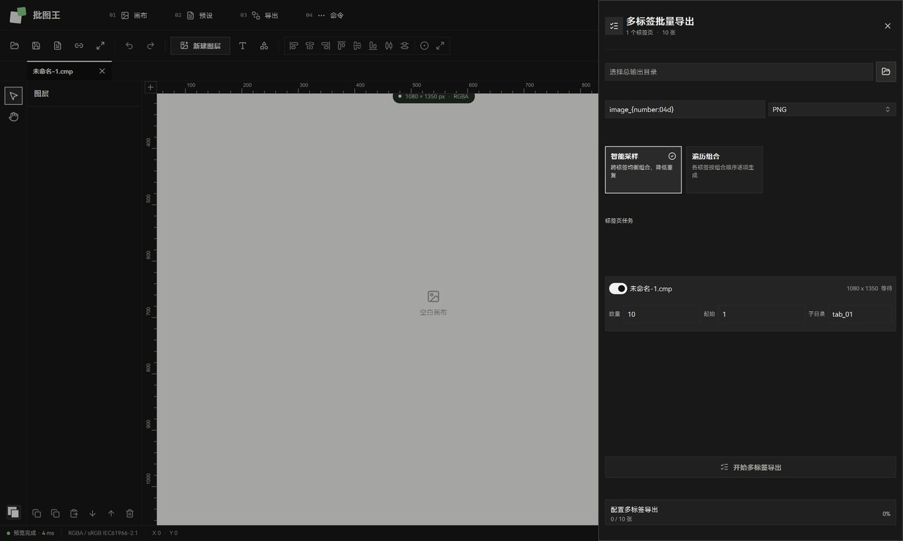
每个标签可以单独设数量和起始序号，还能指定子目录——这是多尺寸交付的关键， 三套尺寸落盘时自然分开，不用导出后再手工挪文件。
异常与降级
导出过程里「降级」和「失败」是两件事，界面分开表达：失败会计数（连续 8 次或失败率过 45% 就中止）， 降级则是在结果面板里单独提示一句——比如素材目录丢失、分类筛选为空、去重失效， 这些情况照样能出图，但图「不对」。把它藏进日志是最容易挨骂的设计，所以这里显式暴露。
12主流程走查
把上面九块能力串起来，一个完整任务是这样跑通的。左侧是用户动作，右侧是程序内部发生的事。
图 12-1 从模板到成图的完整链路
两个高频细节
第一次打开文字属性面板会卡 390ms。原因是首次要遍历系统字体目录、用 fontTools 解析几百个字体头部。
现在改成首屏渲染完 1.5–2 秒后，在后台线程预热字体索引——只走 os.walk 与 fontTools，不碰绑定 GUI 线程的 QFontDatabase，
之后进面板直接命中缓存。这类「一次性等待挪到空闲时」的处理在项目里是固定套路。
批量导出卡住不动。先看是不是单图太大或组合爆炸。安全阈值在高级策略里：单图停滞超时默认 180 秒， 超时会被判失败而不是无限等；连续失败 8 次或失败率过 45% 会主动中止整批，避免跑一晚上全是废图。
13模块依赖关系
依赖是单向的：界面依赖视图模型，视图模型依赖领域模型与服务，领域模型依赖工具层。
反过来不行，check_architecture.py 会拦住。
图 13-1 核心模块依赖图
几处关键依赖说明
- 预览与导出共用渲染器：
FastRenderer同时服务PreviewRenderService和导出路径，这是「所见即所得」的技术前提。render_quality.py再把质量策略集中到一处，避免单图导出和批量导出悄悄分叉。 - 批量导出的两段式：
BatchExportPrecomputerV2先算出「第几张用哪套素材、叫什么文件名」的完整计划，再执行渲染。计划与执行分离，才能做去重、断点、进度预估。 - 绑定组被三方共享：预览随机、批量导出、分类索引缓存都读它，所以它的状态一致性最敏感——改坏一次，三处一起错。
- 序列化是格式契约：
.cmp与预设都是 pickle 二进制（文档格式版本 5），前端重构不得改变格式，老文件必须能打开。
14快捷键与文件位置
常用快捷键
| 操作 | 快捷键 | 备注 |
|---|---|---|
| 新建画布 | Ctrl+N | 打开新建画布弹窗 |
| 打开 / 保存 / 另存为 | Ctrl+O / Ctrl+S / Ctrl+Shift+S | 保存走当前路径，无路径时弹另存 |
| 撤销 / 重做 | Ctrl+Z / Ctrl+Shift+Z | Ctrl+Y、Ctrl+Alt+Z 为兼容别名 |
| 复制 / 粘贴图层 | Ctrl+C / Ctrl+V | 跨文档可用 |
| 复制 / 粘贴图层样式 | Ctrl+Shift+C / Ctrl+Shift+V | 批量调参主力 |
| 复制图层到新层 | Ctrl+J | 类似 PS |
| 自由变换 | Ctrl+T | |
| 编组 / 取消编组 | Ctrl+G / Ctrl+Shift+G | |
| 层序调整 | Ctrl+[ / ]，加 Shift 到底/顶 | |
| 删除图层 | Delete | 重命名用 F2 |
| 裁剪工具 | C | 进自由裁剪，拖框后确认应用 |
| 标尺 / 参考线 | Ctrl+R / ; | |
| 缩放 | Ctrl++ / - / 0 | 0 回 100% |
| 导出当前画面 | Ctrl+Shift+X | PNG / JPG / WebP |
| 批量导出 | F12 | 最常用的一条 |
| 多标签批量导出 | Ctrl+Alt+Shift+X | |
| 预设中心 | Ctrl+Shift+P | 打开整页预设工作台 |
| 修改画布尺寸 | Alt+Ctrl+C | 对齐 PS 的 Canvas Size |
| 检查更新 | Ctrl+Shift+U | 启动 4 秒后也会静默查一次 |
文件都存哪儿
| 内容 | 路径 |
|---|---|
| 项目文件 | 用户自选，扩展名 .cmp（pickle，格式版本 5） |
| 项目预设 | %APPDATA%\批图王\presets\（含 presets_index.json 与缩略图） |
| 画布预设 | ~\.config\批图王\canvas_presets.json |
| 绑定分类索引缓存 | ~\.config\批图王\cache\binding_folder_category_index_v1.json |
| 运行日志 | ~\.config\批图王\logs\（固定 app.log + 轮转） |
| 界面偏好 | QSettings（主题、窗口几何、侧栏宽度、新建画布默认值） |
| 更新清单 | 仓库 update/update.json；客户端另有 jsDelivr 与 5 个 GitHub 代理兜底 |
注意日志目录和数据目录不是同一处：日志在 ~/.config/批图王/logs，预设数据在 %APPDATA%\批图王\presets。
这是历史遗留的不一致，找日志别去 AppData 翻。
开发者入口
| 命令 | 用途 |
|---|---|
python main.py | 正常启动 |
python -m app.qml.qml_main | 只调 QML 时绕过整套初始化 |
python -m app.qml.qml_main --screenshot out.png --demo | 无头截图，本文所有截图都由它生成 |
python -m pytest | 全量测试（109 个测试文件、1088 个用例；纯单元部分约 38 秒） |
python tools/check_architecture.py | 架构约束自检，零依赖 |
python build.py | 打包安装版 onedir + 便携版 onefile + NSIS + 更新清单 |
15已知边界与注意事项
下面这些是读代码时对照真实界面确认过的差异与限制。写出来不是为了挑刺， 是为了让人第一次用的时候不在这些地方浪费时间去猜。
工具轨与实际生效的工具
左侧工具轨只有选择和抓手两个按钮。键盘上 Z / Shift+T / P / G / I / U / A 会切换 activeTool 的值，
但画布只对「抓手（值 1）」作出响应——其余是预留位，按下不会有任何行为。真正可用的是 V（选择）、H（抓手/空格临时切换）、C（裁剪，直接进裁剪流程）。
其他需要注意的
- Ctrl+E 不是像素合并：等价于编组为合并容器，不会真的把两张图拍平。要拍平就导出再导入。
- 撤销栈 20 条：
DocumentHistory(max_history=20)。一次图层操作大约吃掉 2 条，实际可回退约 10 步。深层连续调整请及时保存。 - 批量面板只暴露 PNG / JPG：代码层对 WebP / BMP / TIFF 有分支，但批量界面的分段控件目前只有两档；单图导出提供了 WebP。
- 自动遮罩默认关闭：为兼容旧模板。
AUTO_MASK_DEFAULTS.auto_mask_enabled=False，需要时在尺寸匹配关系里手动打开。 - .cmp 是 pickle 格式：程序加载时会打印安全提示。只打开自己或可信来源的项目文件，不要双击来历不明的 .cmp。
- 组合数是硬约束：「单次用图」在素材耗尽时会跳过本次生成而不是重复用图，所以实际出图数可能少于填写的数量——这是设计意图，不是 bug。
- 遍历组合会覆盖数量：切到遍历模式后，数量输入框的含义变成「理论组合数」，界面会提示「将导出 N 个组合」，超过 1000 / 10000 各有一次数量提醒。
一句话总结
批图王的价值不在单个功能多花哨，而在把「模板 → 素材 → 规则 → 批量 → 交付」压进一条不中断的链路， 并且让每一步的错误都能在出图前被发现，而不是在几百张成品里被发现。
文档依据：app/ 源码（181 个 Python 模块 / 67,499 行）、app/qml/（51 个 QML / 14,390 行）、
AGENTS.md、DESIGN.md、PRODUCT.md，以及 2026-11-02 从当前代码真实渲染的 14 张界面截图。
与源码或界面不符之处，以代码为准。